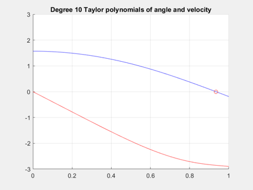
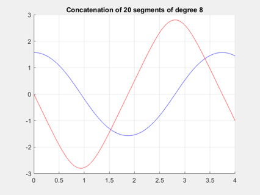

Example 3: The mathematical pendulum
% The differential equation for the angle phi of a mathematical % pendulum of length L under gravitational acceleration g is % % > phi'' + g/L*sin(phi) = 0 % % Introducing the angular velocity psi = phi', we obtain the % equivalent first order system % > phi' = psi % > psi' = -g/L*sin(phi) % which is implemented as an anonymous function f = @(t,phi,psi,g,L)[psi; -g/L*sin(phi)]; % Consider a pendulum of length L = 2.5 and acceleration g = 9.81; % Starting at time t0=0 from a horizontal position at no speed, % that is, phi(0) = pi/2 and psi(0) = 0, we compute the Taylor % expansion of degree k = 10. L = 2.5; g = 9.81; t0 = 0; y0 = [pi/2,0]; [phi,psi] = aode(f,t0,y0,10,g,L); t = linspace(0,1); figure(1), clf, grid on, hold on, axis([0 1 -3 3]) plot(t,polyval(phi,t),'b',t,polyval(psi,t),'r') title('Degree 10 Taylor polynomials of angle and velocity') % Note that the result represents the Taylor polynomials of % the actual solution without any discretization errors. % The analytic form of the solution admits a posteriori queries. % For instance the first zero of phi yields a quarter of the % period T of the oscillation. T = 4*min(abs(roots(phi))); plot(T/4,polyval(phi,T/4),'ro') % The result T = 3.7386 differs from the exact value by one permille. % For times larger than t=1.0, say, the error increases rapidly. % % A piecewise polynomial solution with absolute error less than 5e-7 % over a full period can be computed by concatenating several segments % of size H=1/5 and order 8. Endpoints of segments serve as initial data % for the next one. The computation takes a few seconds. H = 1/5; t = linspace(0,H); figure(2), clf, hold on, grid on, axis([0 4 -3 3]) for i = 0:19 [phi,psi] = aode(f,t0,y0,8,g,L); plot(t,polyval(phi,t-t0),'b',t,polyval(psi,t-t0),'r'); y0 = [polyval(phi,H); polyval(psi,H)]; t0 = t0 + H; t = t + H; end title('Concatenation of 20 segments of degree 8') 